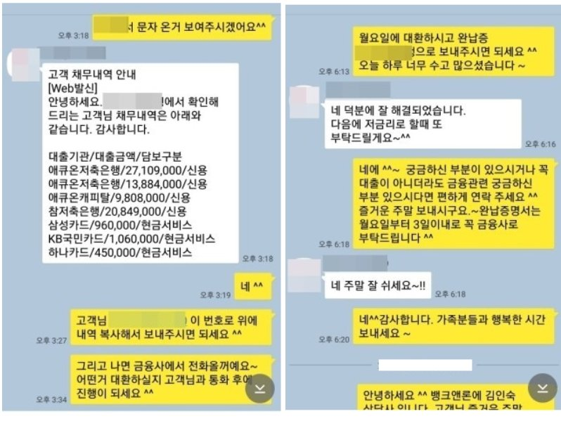

소득대비 기대출 과다사용 직장인, 고금리채무 대환및 추가자금 승인사례!
안녕하세요~ 오늘은 제가 상담 진행해드린 김**고객님의 대출 사례를 안내해
드리겠습니다. 김** 고객님께서는 4대보험이 가입되어 있는 직장인 이셨으며, 월소득은
340만원 정도 되셨습니다. 기대출은 애큐온저축은행2700만원+1380만원(2건), 애큐온캐피탈
980만원, 참저축은행2080만원, 삼성카드96만원(현금서비스), KB국민카드100만원(현금서비스),
하나카드45만원(현금서비스)으로 연봉대비 기대출이 과다하신 상황이였습니다. 고금리 채무
대환과 추가자금이 필요하셔서 문의 주셨고, 저는 상담 후 고객님 조건에서 한도가 잘 나올
수 있는 금융사로 안내를 해드렸고, 그 결과 한 금융사에서 5790만원 자금을 승인받아
중금리로 일부 채무 금리도 낮추고 추가자금까지 받으실 수 있어서 고객님께서도
매우 만족해 하셨습니다. 아래는 저와 김**고객님의 카톡상담 내용 일부를 캡쳐
한것이오니, 참고하시어 많은 도움 되셨으면 좋겠습니다. 감사합니다. ^^
